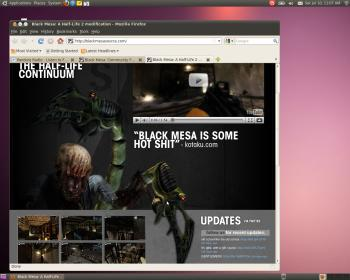

Are you saying that you have never heard about GCC or Eclipse?
EDIT: There is also a huge supporting community to help you on programming for linux so yes i would say it’s even better than windows

Are you saying that you have never heard about GCC or Eclipse?
EDIT: There is also a huge supporting community to help you on programming for linux so yes i would say it’s even better than windows
err…heard of those things said in passing. never delved deeper. 
That’s good to know. better late than never.:fffuuu:
(Mind you I have no idea what I’ll be doing with C++. Just curious)
If you’re serious about using Linux you will want to have the GCC tools nesting on your system. You see the distribution versions of Linux only include stable and tested (old) version of their apps in their distros. So if you want to be on the cutting edge about the software you use there will be no way around compiling the stuff yourself. And that process has really become easier than ever: you usually download the program’s source-code in so called “tarballs” (compressed code in tar.gz, tar.bz2, tar.lzma packages), you decompress the stuff then “cd” your way there. Most of the time there will be a nice “README” which will explain the process but you will in most cases do
./configure(where you can append additional commands, “./configure -h” gives you the possible option you can append)
make(that’s the process where your software gets compiled, it executes a script that does the compiling of all the different libs and merging for you)
make install(it installs the app into the correct folders, ready to use)
make uninstall(well it removes you software from the system, note that GNU/Linux doesn’t have a “Registry” like Windows. Everything from configuration files to attributes you will find them sitting as normal text files ready to be edited on your hard drive.)
the Linux OS is a programmers heaven, in most distros seting up your GCC toolchain is as easy as a couple of clicks through your package manager which even checks all dependencies for you.
There also exist cross-compiler suites like MinGW which makes it possible to compile Windows binaries on the Linux platform.
The Fact that the whole software you get on Linux is open-source is a great advantage for delving deeper into the programming language, you can improve your knowledge and comprehension of a language by reading the code to see how it’s done.
After a few minor setbacks with the monitor and wireless problems, finally got it to work! For now I’m trying out Ubuntu 10.04, although I may try the other version down the road.
It’s been good so far: I foresee lots of learning for me (both good and bad :fffuuu
I think I’ll keep reading about ubuntu and linux first before I delve into the finer things. 
It’s a wee bit slower than xp, but I expected that.

Ubuntu’s themes just keep getting worse with each release, I wonder what’s next <_<
If you got a working cd-rom drive or are able to set it to boot from a flashdrive, try out something like Puppy Linux - no need to install anything and you can get a feel for what it’s like.
I have very little experience with anything Linux based and only used it a few times when my old drive got corrupted somehow. It wouldn’t boot at all and wasn’t even readable by anything win-based, but running Puppy Linux allowed me to retrieve EVERYTHING off the drive as if there was nothing wrong with it
Are the themes going toward a certain aesthetic you don’t like? How were the themes before?
It’s a subjective thing but I think the default themes always sucked, some of them were more usable but the latest one is the worst yet. The default dark theme with purple and pink wallpaper, purple boot image, close, min, max buttons on left side? And yes, I know you can(and I do) change everything to suit you.
I can agree with that. With the default themes they somehow are getting closer to a MAC OS style desktop (the buttons on the left…).
Well I haven’t really used Ubuntu since Hardy Heron, I prefer the alternatives like Mint, Fedora, or Gentoo (my favourite!) anyway.
Was always a fan of KDE even before Ubuntu distributions existed so thats why what I currently is Kubuntu
(Ubuntu with KDE instead of Gnome if you havent realized yet  )
)
i LOVE the new theme!
Founded in 2004, Leakfree.org became one of the first online communities dedicated to Valve’s Source engine development. It is more famously known for the formation of Black Mesa: Source under the 'Leakfree Modification Team' handle in September 2004.